RA Funcional · 9 de outubro de 2026 · para aprovação do Pedro
O que faz o app parecer genérico e "feito por IA", onde a experiência falha no celular e no computador, e uma proposta de melhoria em fases para você aprovar antes de qualquer mudança no código.
Veredito. A sua impressão está certa e tem causa identificável. O app funciona bem (regras, estados, acessibilidade básica), mas a camada visual é um conjunto de escolhas que modelos de IA fazem por padrão: fundo creme com laranja queimado, círculos decorativos, tudo em cartão arredondado com sombra, rótulos pequenos em maiúsculas sobre cada título e uma metáfora de "ingresso" repetida em todo lugar. Nada disso vem da academia do Rafael.
O segundo problema é de produto: a tela mais usada (a agenda do aluno) gasta metade do celular antes de mostrar a primeira aula, e no computador o app do aluno é só a coluna do celular no meio de uma tela vazia.
A boa notícia é que a base está organizada. Todas as cores passam por um único arquivo de tokens, então trocar a identidade custa pouco. O trabalho maior é de estrutura das telas.
Abri todas as telas com dados de exemplo, logado como aluna (Ana) e como treinador (Rafael), em duas larguras: celular (375 px) e computador (1440 a 1536 px). Capturei cada tela, medi posições e tamanhos pelo navegador e contei padrões no código de estilos (2.610 linhas de CSS). Os números acima vêm dessas medições, não de estimativa.
O que não entrou: teste com alunos reais, iPhone e Android físicos, tablet (768 px) e leitor de tela. Recomendo validar a direção escolhida com o Rafael e dois ou três alunos antes de finalizar.
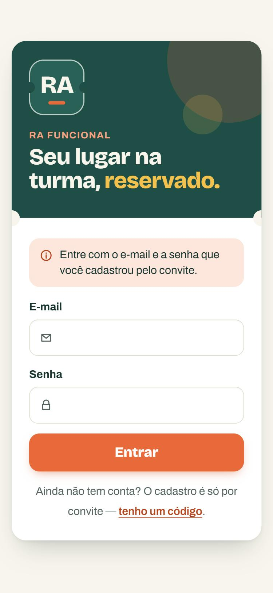
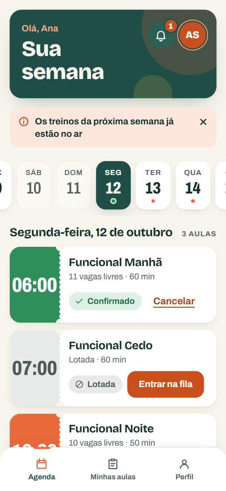
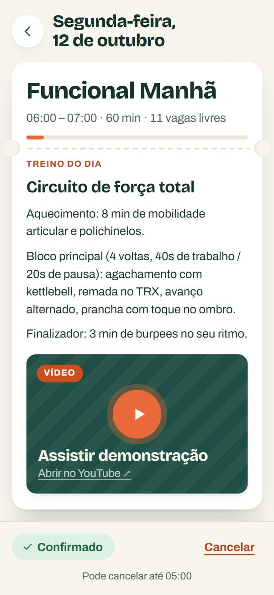
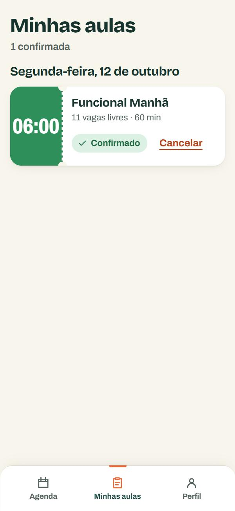
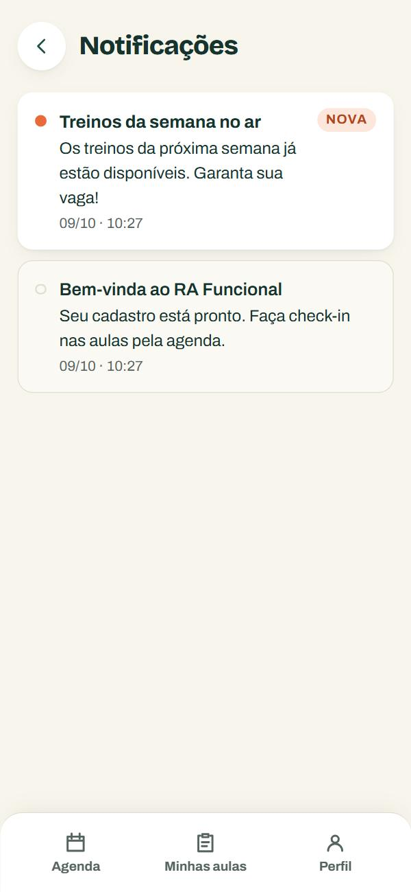
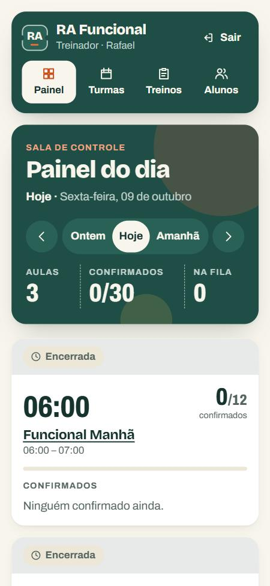
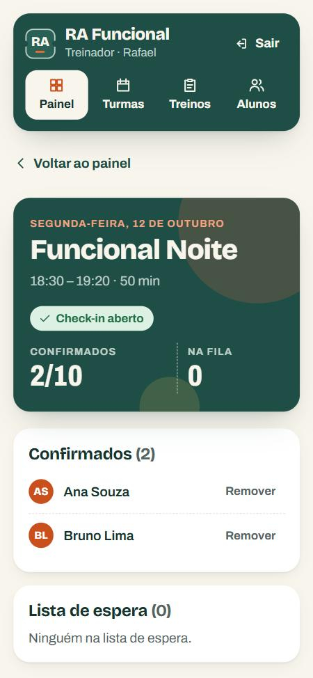
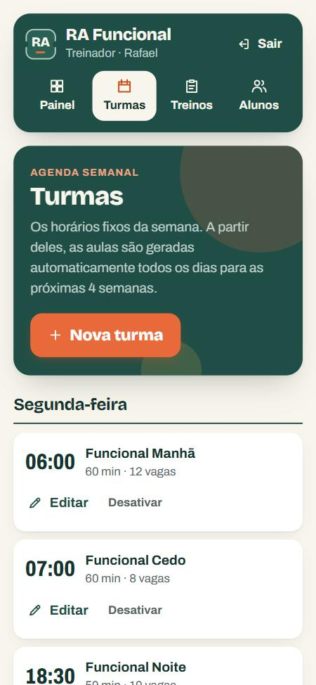
Cada item abaixo, sozinho, é aceitável. Juntos, formam o visual que hoje se reconhece de longe como gerado. A gravidade indica o quanto o item pesa nessa impressão.
Fundo #f8f5ec, ação #e86a3a e marca #1f4e46. É a combinação "papel quente com terracota" que aparece em milhares de sites e apps feitos com IA no último ano. Ela não remete a treino funcional, e sim a cafeteria ou marca de cosmético natural.
Proposta: trocar por uma paleta que saia do universo da academia (ver as três direções na Parte 4), de preferência a partir das cores que o Rafael já usa em uniforme, fachada ou Instagram.
Todo cabeçalho verde tem dois círculos translúcidos decorativos. Os cartões imitam ingressos, com picote, furos laterais e linha tracejada, no login, na agenda, no detalhe da aula e no perfil. Esses elementos não informam nada e são os primeiros que denunciam um layout gerado. Os círculos já causaram um bug real (o cabeçalho do painel deslizava ao clicar), corrigido hoje.
Proposta: remover círculos, picotes e furos. Se a ideia de "reserva" for importante, ela aparece no texto e no estado da aula, não em ornamento.
São 58 usos de sombra e 11 raios de borda diferentes (de 2 px a 46 px, mais pílulas). Quando cabeçalho, aviso, seletor de dia, aula, formulário e botão têm todos o mesmo tratamento de "caixa flutuante", nada se destaca e a tela fica com cara de modelo pronto.
Proposta: um sistema curto: 2 raios (um para controles, um para superfícies), 1 sombra reservada a elementos que realmente flutuam (barra de ação, diálogo). Listas separadas por linha fina em vez de cartões empilhados.
"SALA DE CONTROLE" sobre "Painel do dia", "AGENDA SEMANAL" sobre "Turmas", "CALENDÁRIO" sobre "Treinos", "TURMA DE ALUNOS" sobre "Alunos", "TREINO DO DIA", "RA FUNCIONAL". São 14 no total. Repetem o que o título já diz e são um dos sinais mais reconhecíveis de layout gerado.
Proposta: manter no máximo um ou dois, onde o rótulo acrescenta informação (por exemplo, a data sobre o nome da aula). Remover os demais.
O CSS usa 32 tamanhos de fonte diferentes (0,95rem, 0,9375rem e 1rem convivem, por exemplo). Só a agenda mostra 12 tamanhos na mesma tela. O olho não percebe uma hierarquia, percebe ruído. A fonte de títulos (Bricolage Grotesque) é simpática, mas tem personalidade de marca de consumo, não de esporte.
Proposta: escala de 6 tamanhos, com um papel para cada um. Horários e números em fonte condensada, de placar, que é o que o aluno procura primeiro.
O logo é um quadrado com "RA" genérico. Não existe foto do espaço, das aulas ou do treinador, nem a cor real da marca. Esse é o ponto que mais separa um app profissional de um modelo: material verdadeiro. Nenhuma paleta escolhida por mim resolve isso sozinha.
Proposta: pedir ao Rafael o logo (se existir), 3 a 6 fotos reais e as cores que ele usa. Uma foto real na tela de login e no topo da agenda muda a percepção mais do que qualquer ajuste de CSS.
No celular, o cartão "Sua semana" ocupa 18% da altura sem oferecer ação, depois vêm o aviso e o seletor de dias. A primeira aula começa em 51% da tela e só 2 aulas cabem inteiras. O aluno abre o app para uma coisa: ver e reservar a aula. Isso deveria ser o que ele vê sem rolar.
Proposta: cabeçalho de uma linha (data e sino), "sua próxima aula" em destaque no topo, lista de aulas em linhas compactas. Meta: 4 a 5 aulas visíveis sem rolar.
O laranja é o bloco de hora da aula disponível, o botão de reservar, a barra de lotação, o ponto no seletor de dias e os links de "Desativar" e "Cancelar". O verde é "confirmado", mas também é o fundo dos cabeçalhos. A aula lotada fica cinza, que normalmente significa desabilitado, embora ainda aceite fila de espera. Quando uma cor significa cinco coisas, ela deixa de orientar.
Proposta: uma cor de ação, usada só em botões de ação. Estado da aula comunicado por texto e ícone primeiro, com cor de apoio fixa: confirmado, lista de espera, lotada, encerrada.
Aquecimento, bloco principal e finalizador aparecem como três parágrafos iguais. O vídeo é um retângulo listrado com um botão de play desenhado, sem a miniatura real. Para o aluno, o treino do dia é o conteúdo mais valioso do app.
Proposta: treino em blocos identificados (Aquecimento, Principal, Finalizador) com tempos em destaque. Vídeo com a miniatura real do YouTube.
Mostra apenas a lista de aulas confirmadas, que é uma versão filtrada da agenda. Não há histórico nem frequência. É uma aba inteira da navegação com pouco valor.
Proposta: próximas aulas no topo e, abaixo, a frequência do mês (quantas aulas, em que dias). Isso dá motivo para abrir a aba e é um argumento de venda para o Rafael.
"Os treinos da próxima semana já estão no ar" aparece numa faixa rosada com ícone de alerta, visual de erro para uma boa notícia. A tela de login abre com um aviso rosado permanente explicando o óbvio. Logo depois do login vi uma tela totalmente em branco por alguns segundos, e "Minhas aulas" ficou mais de 3 segundos em "Carregando".
Proposta: avisos por tipo (novidade, atenção, erro) com cores próprias. Texto de ajuda do login como legenda discreta. Esqueleto de carregamento em todas as telas e investigação do tempo de resposta.
Na lista de alunos, "Desativar" aparece em laranja sublinhado em todas as linhas, a mesma cor da ação principal. Em Turmas, cada linha repete "Editar" e "Desativar". A lista de alunos não tem busca: com 60 nomes (situação que capturei durante os testes) vira uma rolagem longa.
Proposta: ações de linha num menu discreto. Busca e filtro (ativos, inativos) em Alunos. Coluna de frequência, que é o que o treinador quer saber.
As mesmas três turmas (06:00, 07:00, 18:30) são repetidas em cinco dias, cada uma num cartão. A informação é uma grade de dias por horários.
Proposta: grade semanal (dias nas colunas, horários nas linhas). No celular, um dia por vez com os mesmos dados.
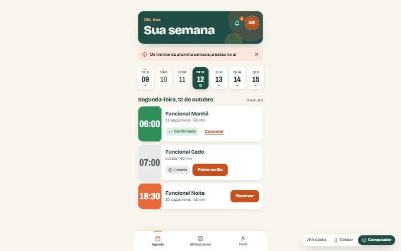
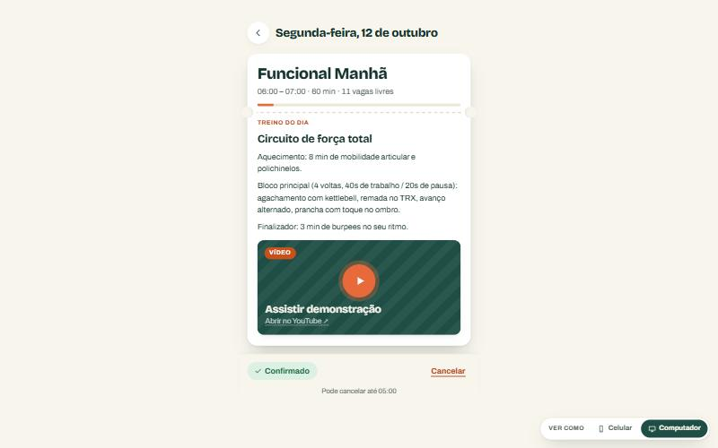
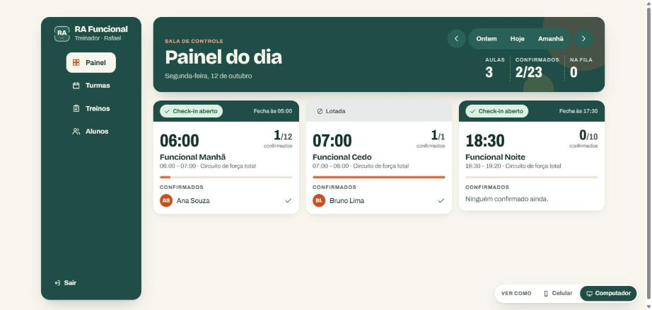
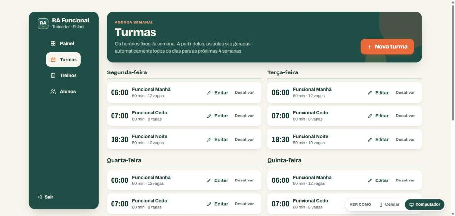
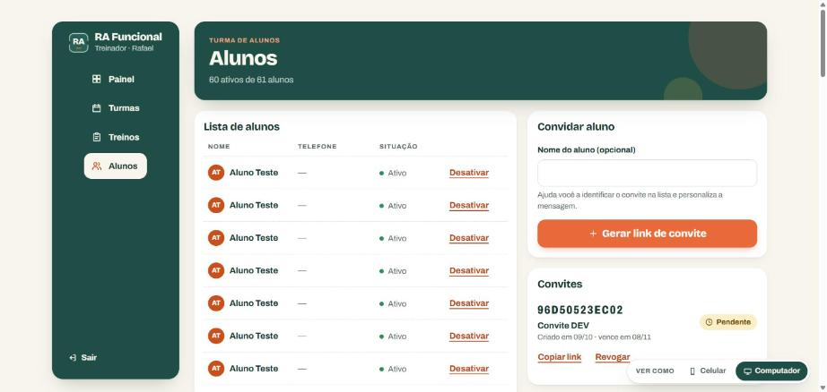
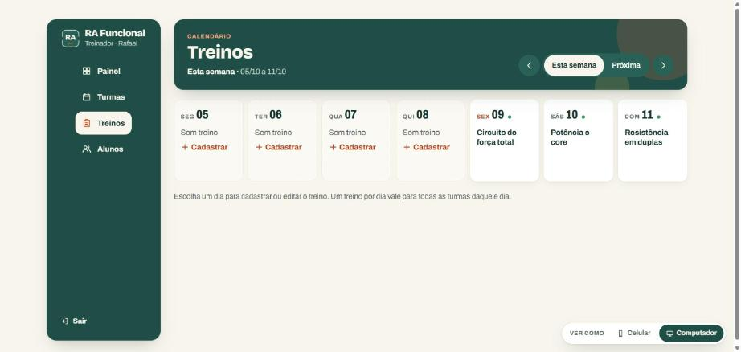
Em 1440 px, o conteúdo fica numa coluna de cerca de 450 px, com a barra de abas de celular flutuando embaixo. Não é um layout de desktop, é o celular ampliado. A documentação do projeto previa lista e detalhe lado a lado acima de 1240 px, mas isso não está no app.
Proposta: a partir de 900 px, menu lateral no lugar da barra de abas e duas colunas (lista de aulas e detalhe). Como o aluno usa quase sempre o celular, sugiro um desktop correto e simples, sem recursos extras.
O CSS muda de layout em 640, 720, 960, 1180 e 1440 px, valores que surgiram tela a tela. Isso torna o comportamento imprevisível em tablets e em janelas reduzidas, que não foram testados.
Proposta: três pontos de quebra para o app inteiro (600, 900, 1200 px) e verificação obrigatória em 375, 768 e 1440 px a cada tela entregue.
É um botão flutuante que aparece em telas largas, para qualquer usuário, e cobre conteúdo no canto inferior direito. Foi útil para demonstrar o app para você, mas não faz sentido para o aluno nem para o Rafael.
Proposta: remover do app publicado e manter apenas em modo de desenvolvimento.
Texto branco sobre o laranja #e86a3a dá 3,2:1. O mínimo recomendado para texto é 4,5:1 (3:1 só vale para texto grande). O branco sobre o verde de "confirmado" dá 4,0:1. No sol, na porta da academia, isso faz diferença. Os demais pares que medi passam.
Proposta: a nova paleta já nasce com todos os pares acima de 4,5:1, verificados antes de aplicar.
O app só tem tema claro. Para quem abre às 5h30 no escuro para conferir a aula das 6h, um tema escuro é conforto real. Não é urgente, mas a estrutura de tokens permite fazer junto com a nova paleta por um custo baixo.
As três resolvem os mesmos problemas de estrutura e mostram a mesma agenda: cabeçalho de uma linha, próxima aula em destaque e lista compacta. Muda a identidade. São esboços para decidir o caminho, não o desenho final. Se o Rafael tiver marca própria, ela substitui as cores de qualquer uma das três.
Branco, preto e um azul de sinalização. Horários em fonte de placar. Referência: o quadro onde o treino é escrito e o cronômetro da sala. Limpo, direto, envelhece bem. É a que recomendo se não houver marca do Rafael.
Escuro por padrão: cinza de piso emborrachado e amarelo de fita de marcação. Tem mais atitude e funciona bem de madrugada. Risco: fundo escuro com uma cor forte também é um visual comum hoje, e exige fotos boas para não ficar pesado.
Mantém o verde e o laranja que você aprovou em 3 de outubro e as fontes atuais, mas tira círculos, picotes, sombras e rótulos. É a mais barata e de menor risco. A cara muda menos: resolve o "básico e bagunçado", resolve só em parte o "cara de IA".
Menu lateral no lugar da barra de abas, lista de aulas à esquerda e a aula selecionada à direita, com o treino em blocos.
Cada fase termina com as telas verificadas em 375, 768 e 1440 px, com capturas para você conferir, e os testes automatizados passando. Nada muda nas regras de negócio, no banco ou nos endereços das telas.
| Fase | O que entra | Resolve | Tamanho |
|---|---|---|---|
| 1 | Fundamentos. Nova paleta e fontes nos tokens, escala de 6 tamanhos, 2 raios, 1 sombra, 3 pontos de quebra. Remoção de círculos, picotes e rótulos. Seletor "Ver como" fora do produto. | A1 a A5, R2, R3, R4 | Médio |
| 2 | Aluno no celular. Agenda compacta com próxima aula no topo, detalhe com treino em blocos e miniatura do vídeo, Minhas aulas com frequência, login e perfil redesenhados, avisos por tipo, esqueletos de carregamento. | U1 a U5, A6 | Grande |
| 3 | Aluno no computador e tablet. Menu lateral e duas colunas a partir de 900 px. | R1 | Médio |
| 4 | Treinador. Painel mais denso, Turmas em grade semanal, Alunos com busca, filtro e frequência, ações de linha em menu. | U6, U7 | Grande |
| 5 | Acabamento. Tema escuro (se aprovado), revisão de contraste e foco, teste em aparelhos reais. | R5 | Pequeno |
A ordem sugerida entrega primeiro o que o aluno vê todos os dias. As fases 1 e 2 juntas já mudam a percepção do app. Recomendo fazer a publicação online só depois da fase 2.
Recomendo a A. Se o Rafael tiver identidade própria, uso as cores dele sobre a estrutura da A.
Logo, fotos das aulas ou do espaço, cores do uniforme ou do Instagram. É o que mais tira a cara de modelo pronto. Sem isso, sigo com tipografia e cor apenas, e deixo os espaços de foto preparados.
Minha sugestão: um desktop correto e simples (fase 3), sem recursos exclusivos. O treinador já tem um desktop melhor e recebe a fase 4.
Na direção B ele é o padrão. Nas direções A e C é opcional, na fase 5.
Fase 1 e 2 primeiro, com uma parada para você ver a agenda nova antes de eu aplicar o padrão nas outras telas.
Auditoria feita sobre o app em desenvolvimento local, com dados de exemplo do ambiente DEV. As capturas mostram o estado de 9 de outubro de 2026. Os esboços das direções são componentes ilustrativos, não o projeto final.